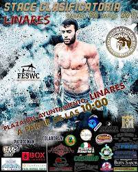
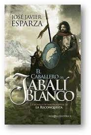
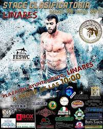
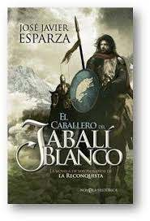

Guillermo Autobiography
Guillermo was born on july thirty, two thousand three, in Linares. He is now seventeen years old,he is studying second year of Bachillerato in “La Presentación”, he has studied since he was three years old there, as well as all his brothers. He has seven brothers and one sister and he is the youngest, although he is the tallest, they all live in the same house. Also he has a dog, its name is Fortu.
He is medium height, his hair is a little blond and curly, his eyes are brown.
His favorite hobby is training calisthenics, especially the endurance category, he has participated in three competitions. He also likes drawing, and reading. The books he likes the most are historical novels, his favourite one is ``El caballero del jabalí blanco´´, but he also likes other topics.
 


